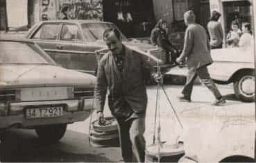

İstanbul’un Gezici Eminleri:
Sütçü ve Yoğurtçu Esnafı
Osmanlı toplumu kendi kültürünü ve dinamiklerini oluşturmada mahir kurumlar geliştirmiştir. Esnaf loncaları, ait oldukları grubun gelişimini ve düzenli işleyişini kusursuz şekilde sağlamayı kendilerine şiar edinmiş teşkilatlardır. Usta çırak ilişkisi içerisinde hareket ederek faaliyetlerini sürdürmekteydiler. Osmanlı kültüründe esnaf, yapmış oldukları işler ve çalışma koşullarına göre ikiye ayrılırdı. Hanlarda ve çarşılardaki dükkânlarda daimi görev yapan esnafa ‘sabit esnaf’, mahalle aralarında ve sokaklara gezerek doğrudan satış ve pazarlama görevi yapan esnafa ‘gezici esnaf’ denirdi. Osmanlı döneminin gezici esnafı yani sokak satıcıları, giyim-kuşamları, bağırışları ve renkli görüntüleriyle mahallelerin ayrılmaz bir parçası, sokakların renkli sesiydi.
Osmanlı esnafı müşterilerine karşı güvenilir, emin kişilerdi. Esnafın güvenilirliği ve eminliği konusunda XIX. yüzyılda Polonyalı seyyah Edward Raczynski’nin gözlemini burada belirmekte fayda buluyorum. Edward Raczynski Osmanlı esnafı hakkında şunları kaydediyor: “İstanbul’daki Türklerin namuslu ve dürüst alışverişlerine hayran oldum. Hemen her gün Bedestene gidiyordum. Bizdeki alıcı ve satıcıların birbirlerini aldatmaya kalkışmalarına burada hiç rastlamadım. Satıcı malına bir fiyat söylüyor. Alıcı ise bu fiyattan

aşağı bir fiyat veriyor. Verilen üçüncü fiyatta ya anlaşıyorlar ya da alıcı çekip gidiyor.”
Evliya Çelebi, Seyahatnamesi’nde Osmanlı esnafını uzun uzun anlatarak bizlere esnaf hakkında tafsilatlı bilgiler sunmaktadır. Se-yahatnamesi’nin birinci cildinde esnafa 200 sayfa yer ayırarak; 57 kümede 1109 esnaf türü hakkında bizleri bilgilendirir.
Osmanlı medeniyetinin ürünü olan bu gezici esnaf arasında çağdaşı diğer ülkelerdeki benzerlerinin yanında sadece bu coğrafyanın ve kültürün ürünü olan sokak satıcılarımız oluşmuştu. Bu sokak satıcıları arasında şunlar vardı: Fenerci, Hamlacı, Kayıkçı, Arayıcı, Mahyacı, Bıçakçı, Çakıcı, Çuvaldızcı, Çarıkçı, Debbağ, Duhancı, İğneci, Kavukçu, Kundakçı, Mesci, Muytap, Semerci, Sarraç, Yüksükçü, Nalbant, Kelle ütücü, Su yolcu, Dülger, Hancı, Helvacı, Çilingir, Kirazcı, Çilekçi, Karanfilci, Kaşkaval Peynircisi, Kaymakçı, Baklacı, Muhallebici, Yelpazeci, Şerbetçi, Karcı ve Buzcu, Çiçek Suyu (gül suyu olabilir) Satıcısı, Ciğerci, Balıkçı, Şekerci, Salcı, Salepçi, Bozacı, Tülbentçi, Tavukçu, Şekerci, Simitçi, Baca Temizleyicisi ve Sütçü ve Yoğurtçu Esnafı vb.
Henüz süt ve yoğurtların sanayi tipi ambalaja konmadığı zamanlarda İstanbul’un mahallelerini sokak sokak arşınlayan sütçüler ve yoğurtçular bulunurdu. Şehre yakın semtlerdeki çiftlik ve mandıralarında besledikleri ineklerinden elde ettikleri sütleri ve yoğurtları şehrin sokaklarında bağırarak satmaya çalışan gezici sütçü ve yoğurtçu esnafı göze çarpardı.
Bir semtin sütçüsü, süt güğümlerini elleriyle taşırdı. Yarım litrelik ve bir litrelik iki adet ölçü kabını yanından eksik etmezdi. Sokak aralarında dolaşırken bağırarak dolaşır, sütçünün sesini duyan mahalle sakini pencereden ona seslenirdi. Maddi durumu iyi olmayan bazı mahalle sakinleri sütçüden veresiye süt alacak kadar samimi ilişkiler kurarlardı.
Ülkemizde süt sanayisinin gelişimi ile birlikte mahalle sütçüleri bir bir yok olmaya başlamıştır. Sokaklarımızın gezici esnafı yoğurtçuyu ve onların ürünü yoğurdu en iyi tarif edenlerden biri olan gazeteci Ahmet Örs duygularını ifade ederken; “1960’lı yıllarda öğrenci olarak bulunduğum Avusturya’da büyük özlemini çektiğim yoğurt, şişeler içinde ve şişenin dibinde bir parmak çilek marmeladıyla satılırdı. Her ne kadar özlemimi gidermese de, uzun bir kaşıkla iyice karıştırdıktan sonra, bizimkilerin tadına hiç benzemeyen bu yoğurdu yer, kendimi yoğurt yediğime inandırmaya çalışırdım. Bizde ise o dönemde sanayi tipi ambalajlı yoğurt yeni yeni yaygınlaşıyordu. Sokak yoğurtçuları omuzlarındaki askının iki yanına yerleştirdikleri yoğurt tep-sileriyle dolaşırlar ya ellerindeki çanı çalarak ya “Yooğurtçuu... Silivri’nin yoğurduu!” türünden nakaratlı seslenişlerle geldiklerini duyururlardı. Yoğurt alırken evden bir tabak getirilir, yoğurtçu tepsilerin üzerini örten bezleri ve kapağı kaldırır, elindeki geniş yüzeyli ispatül ile tepsideki yoğurttan ince tabakalar keser, tabağa aktarırdı. Bu manzarayı seyretmek bile ağzımı sulandırmaya yeterdi. Gerçi sokak yoğurtçusunun hijyenik olmadığı, açıkta satıldığı için üzerine toz toprak konduğunu söyleyenler vardı ama yoğurt o kadar lezzetli, kıvamı, üzerinin kaymağı o kadar yerindeydi ki, bu uyarılara kulak asan pek yoktu.” demekten kendini alamıyordu.
Seyyar esnaflar ve satıcılarımızın sesi gecenin karanlığını da çınlatırdı. Bu konuya İtalyan asıllı yazar Willy Sperco, “Gezgin satıcılar yollarını kandillerle aydınlatarak, mallarını bağırarak satarlardı (yoğurt, armut, keten helva). Her gün aynı saatte bu sesler sokakları çınlatırdı.” şeklinde anılarında yer vermektedir.
Prof. Dr. Metin And, Skylife dergisindeki bir makalesinde, kapıdan geçen yoğurtçuya nasıl seslendiklerini ve yoğurt alışverişinin nasıl olduğunu şu şekilde anlatmaktadır: “Ben çocukluk ve gençlik yıllarımda İstanbul’da Lâleli’de oturdum. Mahallenin yoğurtçusu sokağımızdan her gün geçer, son heceyi çok uzatarak “Yoğurtçuuu!” diye bağırırdı. En üst katta oturan biz, bu sesi duyunca hemen pencereden uzanıp onu çağırırdık. Omzunda sanki bir terazi gibi taşıdığı iki gözlü yoğurt aracı ile merdivenleri ağır ağır çıkardı. Bunlardan birinin gözünde, büyük yuvarlak teneke kap içinde Silivri yoğurdu, ötekinde ise terazisi, yoğurdu kâseye boşaltmak için kısa el küreği, kaymak istemeyen olduğunda yoğurdun üzerindeki kaymağı sıyırarak koyduğu saplı, kapaklı bir kutusu bulunurdu. Aradan 60-65 yıl geçmesine karşın yoğurtçunun sesi hâla kulaklarımdadır. Tıpkı eskici, bileyci, mani söyleyen macuncu gibi...”
Makalemizi Metin And’ın şu sözleriyle bitirelim, “Bugün artık eskisi kadar sokak satıcıları gözükmüyor. Günümüzde sokakların sesleri ve renkleri hızla azalmakta. Küçük bir kısmı hâlâ işlerini sürdürüyorlar da, arada bir “Simitçiiii”, “Bozaaa”, “Esskicii” bağırışlarını duyabiliyoruz. Gerisi ise resimlerde, gravürlerde, siyah beyaz fotoğraflarda, anılarda...”